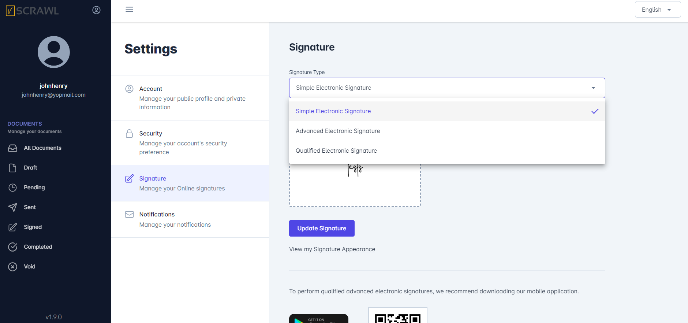
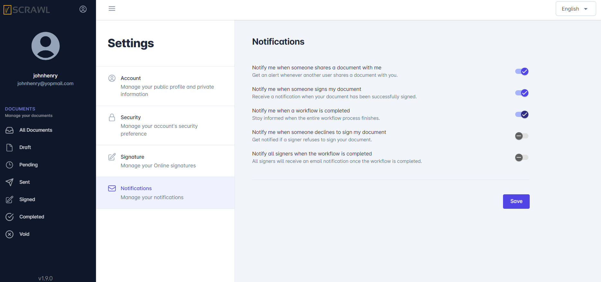
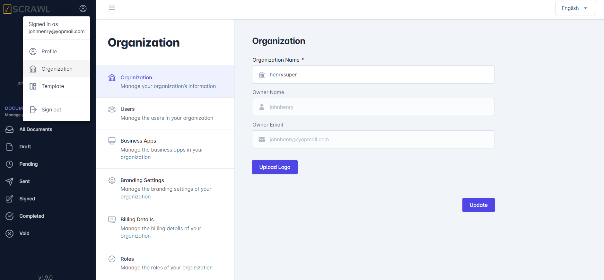
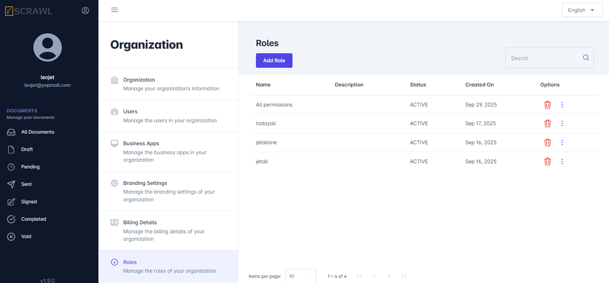
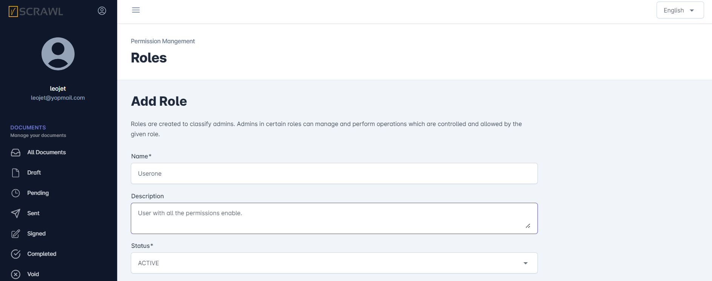
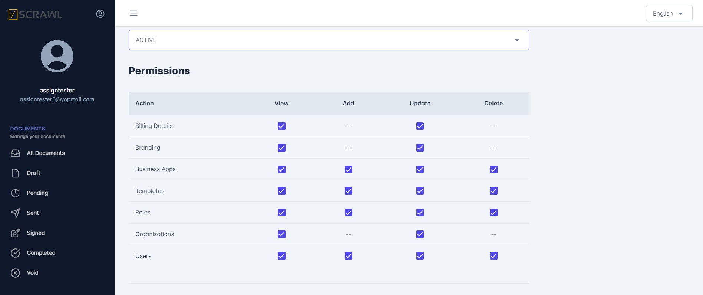
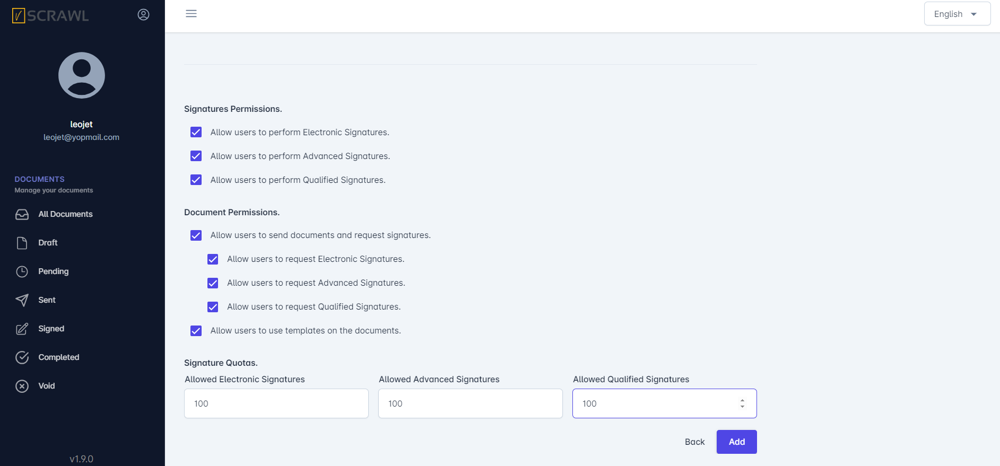
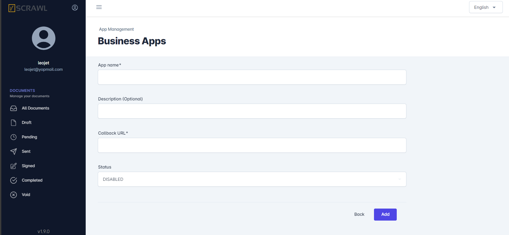

User & Organization Settings
User Specific Settings
Profile Settings
The Profile Settings page in vScrawl allows you to manage your account details, security preferences, online signatures, and notifications. This is where you personalize your profile and ensure your signing experience is both secure and efficient.
-
Displays your name and email address.
-
Useful for confirming which account you are logged into.
-
Clicking the user cog in the left side panel allows access to Profile, Organization, Templates and sign out.

Account Settings
-
Name – Display name shown in your vScrawl account.
-
Username – Unique identifier (used for login or internal reference).
-
Email – Registered email address (used for login, notifications, and signing).
-
After changes, click Save to update your profile.
Security Settings
- Here you can set the security settings for your account by setting up:
Enable Security Question
Enable 2-Factor Authentication

Signature Settings
-
In vScrawl, you can set up and manage the type of electronic signature you want to use by default, directly from your Settings. This ensures flexibility and compliance with different levels of security and legal requirements.
-
You can change your signature type and appearance anytime, depending on the security level required and Set or update your signature by clicking Update Signature.

-
Your signature settings are applied across all documents you upload or sign in vScrawl.
-
If you are present in someone’s organization you can see your signature quota’s for Simple and Digital Signatures.

Notifications Settings
The Notifications feature in vScrawl allows you to stay informed about the status of your documents throughout the signing workflow. You can customize which alerts you receive, ensuring that you are always up to date on important actions without unnecessary interruptions.
Here you can choose how you receive updates:
-
Notify me when someone shares a document with me
-
Notify me when someone signs my document
-
Notify me when a workflow is completed
-
Notify me when someone declines to sign my document
-
Notify all signers when the workflow is completed

Organization Specific Settings
Organization
Here you can see the organization details:
Organization Name
Owner Name
Owner Email

Roles
Here you can add roles with different permissions and will assign that role for inviting a new user to your organization. The roles you will create will appear hear in the list. You can search different roles by using the search option.

- This is the Add Role screen when you click on the Add Role button.

- You can create a role with the different permissions (Billing Details, Branding, Business Apps, Templates, Roles, Organizations and Users) and the signature quotas you want and then can assign that role to any users and invite them to your organization.


Users
-
Here you can see the list of users who have joined your organization.
-
You can update the role of users in your organization.
-
You can also renew their signature Quotas.
-
You can delete user from your organization.
-
You can invite a new user to your organization by giving him the roles & permissions you want.


Business Apps
- You can add Business App or any third party app with vScrawl by adding proper details of the app like:
Client ID
App name
Description
Call back URL
Status


Branding Settings
Here you can customize the color, theme and overall look of the app. There are multiple options for customization like:
Header Section
Left Panel Section
Buttons Section


Billing Details
- Here you can see your billing details like:
Account Balance
Available Credits
Last Purchased Credits
Credits Purchased Date
Credits Expiry Date.
This will depend on the admin roles permission and the package you have allocated. When you create a new account on vScrawl there will be a package allocated to you which have a credit limits and duration for signing the documents. Your balance will be deducted on each signature and other activities.